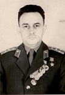

Герои Дона
Рассказы о судьбах Героев Ростовской области, каждым своим шагом приближавших Победу нашего народа в Великой Отечественной войне. Помним. Гордимся.
-

Авлев Василий Нестерович
30.12.1916, Ростов-на-Дону – 11.07.1997, Нижний Тагил
смотреть -

Баков Николай Митрофанович
01.05.1921, хутор Мелиозовка, Родионово-Несветайский район – 19.12.1987, Ростов-на-Дону
смотреть -
Викаренко Фёдор Иванович
17.02.1913, село Новониколаевка, Азовский район – 23.04.1994, пгт Монино, Московская область
смотреть -
Наумов Николай Митрофанович
01.05.1921, хутор Мелиозовка, Родионово-Несветайский район – 19.12.1987, Ростов-на-Дону
смотреть -
Любимов Василий Нестерович
30.12.1916, Ростов-на-Дону – 11.07.1997, Нижний Тагил
смотреть -
Щербаков Николай Митрофанович
01.05.1921, хутор Мелиозовка, Родионово-Несветайский район – 19.12.1987, Ростов-на-Дону
смотреть -
Рязов Василий Иванович
01.01.1921, село Александровка, Азовский район – 25.04.2017, Москва
смотреть -
Семин Николай Митрофанович
31.03.1914, станица Селивановская, Милютинский район – 19.11.1994, Ростов-на-Дону
смотреть -
Чуев Василий Нестерович
06.03.1911, село Большие Салы, Мясниковский район – 13.04.1942, поселок Крестцы, Ленинградская область
смотреть -
Флоренко Алексей Васильевич
07.02.1922, хутор Бакай, Чертковский район – 25.07.1944, Польша
смотреть